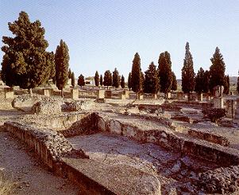
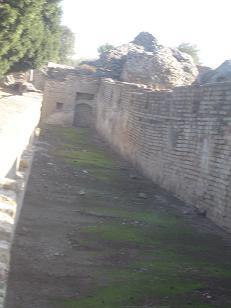

|
COLLEGIUM DE
LA EXEDRA
La Casa de la Exedra está ubicada
en una gran estructura construida alrededor de un atrio rectangular en cuyo
centro hay una piscina curvilínea.
|
 |
También
poseía una serie de habitaciones adornadas con mosaicos. La villa recibe
este nombre por la original disposición de uno de los lados
septentrionales, formado por una bóveda que cubría una gran exedra.
Incluye unas termas y una alargada
palestra, en cuyos extremos se observa la exedra cuya bóveda se haya hundida. El
patio central esta presidido por una fuente y presenta pórticos de pilares
cruciformes.
Ocupa toda una
manzana, unos 4000m2. En Itálica hay edificios que no tienen clara su
interpretación, no se sabe si es un edificio público, una casa o una cofradía.
En los collegia se reunían asociaciones de hombres que trabajaban en los
mismos o rendían culto a una divinidad. |
|
A ambos lados de la
entrada se hallan los locales comerciales, tabernaes.
Tras la entrada de
planta curva se halla el vestíbulo de unos 60m2, enmarcado por dos estancias o
porterías, cella ostiaria, y en cuyo fondo se hayan dos pasillos, el de
la izquierda comunica con el gimnasio y el de la derecha con la calle a través
de una entrada secundaria. El gimnasio se halla al norte del edificio y mide
10x40m.
Al fondo se halla la exedra,
habitación abovedada de unos 60m2 que también se comunica con el gimnasio por el
exterior a través de la terraza. Una estancia intermedia sirve de nexo entre el
vestíbulo y el peristilo. Al suroeste del vestíbulo se halla la zona de servicio
con varias dependencia que incluyen unas letrinas. Por los lados norte y sur se
distribuyen las estancias más representativas de la casa. Al fondo del peristilo
se hayan dos escaleras, la del sureste conducía al segundo piso y la de situada
en el centro del edificio comunica con las termas. Al fondo del lado sur se haya
una estancia abovedada. |
 |
La estancia del
ángulo sureste se interpreta como vestuario, apodyterium y
junto a este se halla un praefurnium, horno para calentar las estancias,
se conservan los arranques de los pilares de ladrillo que sustentaban el suelo.
|